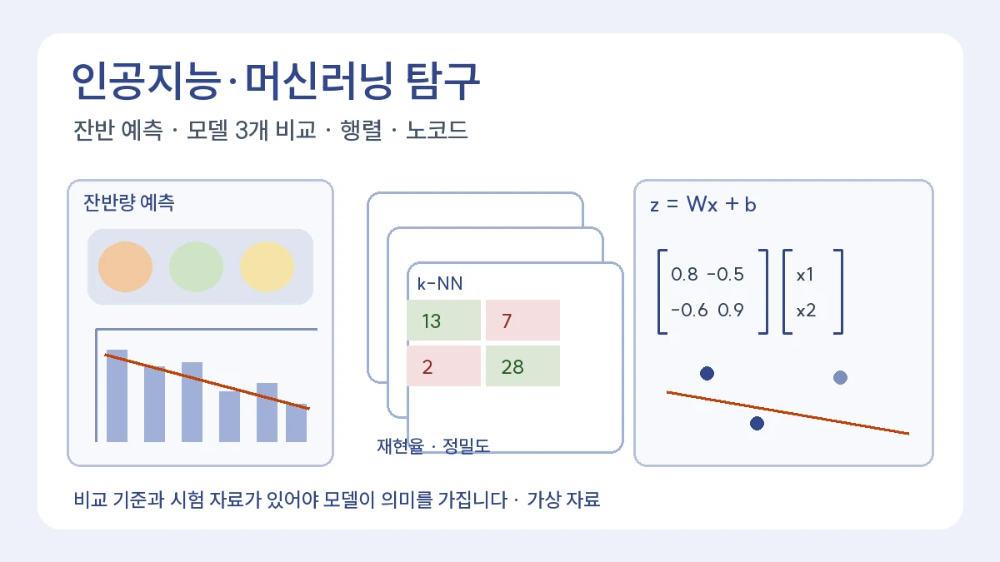

인공지능·머신러닝 탐구보고서 예시: 잔반량 예측, 분류 모델 비교, 행렬, 노코드 도구
비교 기준과 시험 자료가 있어야 모델이 의미를 가집니다
목차
- 이 글의 역할과 시작 전 확인할 것
- 인공지능 탐구보고서 예시: 급식 잔반량 예측 모델
- 머신러닝 탐구보고서 예시: 분류 모델 3개 비교
- 인공지능 수학 탐구보고서: 행렬로 분류 모델 설명하기
- 노코드 AI 탐구보고서: 코딩 없이 보여 줄 수 있는 탐구 과정
- 자주 묻는 질문
- 근거와 확인 범위
핵심 요약
- 잔반량 직선 모델: 시험 2일 평균절대오차 0.77 kg, 평균으로 찍으면 1.75 kg
- 정확도 1등과 재현율 1등이 다를 수 있음
- 선형 분류기의 경계가 직선인 이유를 행렬 계산으로 설명

인공지능 탐구보고서는 “AI를 써 봤다”에서 끝나기 쉽습니다. 이 글은 고등학생이 결과를 직접 검산할 수 있는 크기의 예시 세 개로, 모델을 만들고 비교하고 수학으로 설명하는 과정을 보여 줍니다. 마지막으로 코딩 없이 노코드 도구로 할 때 보고서에 무엇을 남겨야 하는지 정리합니다. 모든 수치는 편집팀이 만든 가상 자료이며 실제 학교의 자료나 학생이 수행한 결과가 아닙니다.
1. 이 글의 역할과 시작 전 확인할 것
AI 탐구 질문을 고르는 단계는 AI·소프트웨어 계열 로드맵의 ‘직접 검증할 수 있는 질문 15개’, 집단별 오류와 개인정보 문제는 알고리즘 윤리 탐구보고서가 맡습니다. 이 글은 그 사이, 실제로 모델을 만들고 평가하는 과정을 다룹니다. 시작 전에 아래 세 가지를 적어 두세요.
- 예측하려는 것: 숫자(회귀)인지, 종류(분류)인지
- 비교 기준: 모델 없이 평균이나 가장 많은 답으로 찍었을 때의 성적
- 시험 자료: 학습에 쓰지 않고 따로 떼어 둘 자료
2. 인공지능 탐구보고서 예시: 급식 잔반량 예측 모델
질문: 전날 조사한 ‘메뉴를 좋아한다’는 응답 비율로 그날의 잔반량을 예측할 수 있는가?
가상의 8일 학습 자료에서 선호 응답 비율(%)이 35, 60, 45, 80, 50, 70, 40, 65이고 잔반량(kg)이 17.0, 12.5, 13.5, 8.5, 15.5, 9.0, 14.5, 11.0이었다고 합시다. 최소제곱법으로 직선을 맞추면 잔반량 ≈ 22.81 − 0.182 × 선호 비율이 나옵니다. 선호 비율이 10%p 오를 때 잔반이 약 1.8 kg 줄어든다는 뜻이고, 학습 자료의 결정계수 R²는 약 0.89입니다.
그러나 학습 자료에서 잘 맞는 것은 증명이 아닙니다. 따로 떼어 둔 2일(선호 55%·잔반 13.5 kg, 선호 75%·잔반 10.0 kg)에 적용하면 예측은 12.80 kg, 9.16 kg이고 평균절대오차는 0.77 kg입니다. 모델 없이 학습 자료 평균(12.69 kg)으로 찍으면 평균절대오차는 1.75 kg입니다. 비교 기준보다 나은지를 보여 줘야 모델이 의미가 있습니다.
결론 문장 고치기
수정 전: AI 모델로 잔반량을 정확하게 예측할 수 있었다.
수정 후: 8일 자료로 만든 직선 모델은 시험 2일에서 평균절대오차 0.77 kg으로, 평균으로 찍었을 때(1.75 kg)보다 오차가 작았다. 다만 시험 자료가 2일뿐이고 날씨·행사 같은 요인을 넣지 않았으므로, 한 달 이상 자료로 다시 확인해야 한다.
3. 머신러닝 탐구보고서 예시: 분류 모델 3개 비교
질문: 같은 자료에서 로지스틱 회귀, 결정 트리, k-최근접 이웃 중 어느 모델이 ‘양성’을 덜 놓치는가?
비교가 공정하려면 세 모델이 같은 학습 자료와 같은 시험 자료를 써야 합니다. 시험 자료 50개(양성 20, 음성 30)에서 가상의 결과가 아래와 같았다고 합시다.
- 로지스틱 회귀: 양성 20개 중 16개를 맞힘, 음성 30개 중 3개를 양성으로 잘못 판정 → 정확도 86%, 재현율 80%, 정밀도 84.2%
- 결정 트리: 양성 17개를 맞힘, 음성 7개를 잘못 판정 → 정확도 80%, 재현율 85%, 정밀도 70.8%
- k-최근접 이웃: 양성 13개를 맞힘, 음성 2개를 잘못 판정 → 정확도 82%, 재현율 65%, 정밀도 86.7%
정확도만 보면 로지스틱 회귀가 1등이지만, 양성을 덜 놓치는 것이 목적이라면 재현율이 가장 높은 결정 트리가 낫습니다. 대신 결정 트리는 음성을 양성으로 잘못 판정한 경우가 7개로 가장 많습니다. 어느 오류가 더 문제인지는 자료가 쓰이는 상황이 정합니다. 보고서에는 “어떤 모델이 가장 좋다” 대신 “목적이 ○○일 때 ○○ 지표로 비교하면”이라는 조건을 붙입니다.
시험 자료 50개는 적습니다. 자료를 다섯 번 나눠 바꿔 가며 평가하는 교차검증을 하면 결과가 우연인지 확인할 수 있습니다. 실제로 하지 않았다면 다음 계획으로 적습니다.
4. 인공지능 수학 탐구보고서: 행렬로 분류 모델 설명하기
인공지능 수학은 2022 개정 교육과정에서 수학 교과의 진로선택 과목입니다(총론 PDF 38쪽, 인쇄 26쪽).[1] 분류 모델의 계산은 행렬과 벡터의 곱으로 쓸 수 있어서, 이 과목에서 배운 내용을 직접 보여 주기 좋습니다.
특징 두 개(x₁, x₂)로 두 종류를 나누는 가상의 선형 분류기를 생각해 봅시다. 가중치 행렬 W의 첫 행은 (0.8, −0.5), 둘째 행은 (−0.6, 0.9)이고 편향 b = (0.1, −0.2)입니다. 점수 벡터는 z = Wx + b이고, 점수가 큰 쪽으로 분류합니다.
- x = (1.0, 0.4): z = (0.8 − 0.2 + 0.1, −0.6 + 0.36 − 0.2) = (0.70, −0.44) → 종류 1
- x = (0.3, 1.2): z = (0.24 − 0.6 + 0.1, −0.18 + 1.08 − 0.2) = (−0.26, 0.70) → 종류 2
- x = (0.9, 0.9): z = (0.37, 0.07) → 종류 1이지만 두 점수의 차이가 0.30으로 작아 경계 근처입니다.
탐구 질문은 여기서 나옵니다. “두 점수가 같아지는 점들의 집합은 어떤 도형인가?” 0.8x₁ − 0.5x₂ + 0.1 = −0.6x₁ + 0.9x₂ − 0.2를 정리하면 1.4x₁ − 1.4x₂ + 0.3 = 0, 곧 직선입니다. 선형 분류기의 경계가 왜 직선(차원이 높으면 평면)인지 행렬 계산으로 설명하면, 공식을 외운 것이 아니라 이해했다는 것을 보여 줄 수 있습니다. 역행렬과 연립방정식의 연결은 역행렬과 연립방정식 탐구에 있습니다.
5. 노코드 AI 탐구보고서: 코딩 없이 보여 줄 수 있는 탐구 과정
코딩을 하지 않아도 블록이나 메뉴로 모델을 만드는 노코드 도구가 있습니다. 예를 들어 AI Canvas(인공지능제작소)는 학교·기관 도입과 학생 수강을 상담하는 교육 서비스로, 공식 사이트에서 학습 흐름을 ‘데이터 선택 → 전처리 → 학습 → 평가 → 예측·활용’의 5단계로 안내합니다.[2] 편집팀은 특정 서비스를 추천하지 않으며, 학교에서 쓰는 도구가 다르더라도 보고서에 남길 내용은 같습니다.
- 데이터: 자료의 출처, 행의 단위, 고른 변수와 고른 이유. 도구에 들어 있던 예제 자료라면 그 사실을 밝힙니다.
- 전처리: 결측치·이상치를 어떻게 처리했는지와 처리 전후의 행 수.
- 학습: 고른 모델 이름과 바꾼 설정. 화면을 캡처해 부록에 넣으면 다른 사람이 다시 할 수 있습니다.
- 평가: 시험 자료의 비율, 정확도 외의 지표(재현율 등), 그리고 2절의 비교 기준.
- 해석: 도구가 보여 준 결과에서 학생이 내린 판단과 그 판단의 한계.
노코드 도구로 한 탐구에서 쓰면 안 되는 문장도 있습니다. “모델을 직접 구현했다”는 도구가 대신 계산한 경우 사실이 아닙니다. “도구로 로지스틱 회귀 모델을 학습시키고, 결정 경계와 오류 사례를 해석했다”처럼 실제로 한 일만 씁니다. 도구 안의 계산 원리가 궁금하다면 4절처럼 작은 예시를 손으로 계산해 보는 것이 좋은 후속 탐구가 됩니다.
6. 자주 묻는 질문
파이썬을 못 하면 AI 탐구보고서를 쓸 수 없나요?
쓸 수 있습니다. 5절처럼 노코드 도구나 스프레드시트로도 과정을 보여 줄 수 있습니다. 중요한 것은 도구가 아니라 비교 기준과 시험 자료를 정하고 결과의 한계를 쓰는 일입니다.
정확도가 높으면 좋은 모델인가요?
아닙니다. 3절처럼 정답 비율이 치우친 자료에서는 정확도가 높아도 중요한 경우를 많이 놓칠 수 있습니다. 목적에 맞는 지표를 함께 보고해야 합니다.
교내 설문으로 AI 모델을 만들어도 되나요?
학교의 허락과 개인정보 보호 기준을 먼저 확인하세요. 수십 명 규모의 자료로는 모델 성능을 일반화하기 어려우므로, 관계를 그래프로 확인하는 데서 멈추는 편이 정직할 때가 많습니다. 점검 질문은 알고리즘 윤리 탐구보고서 6절에 있습니다.
7. 근거와 확인 범위
확인일: 2026-11-12. 과목 분류는 국가교육위원회 고시 제2026-1호 일부개정을 포함한 총론 과목표에서, 노코드 도구의 학습 흐름은 AI Canvas 공식 사이트의 안내 문구에서 확인했습니다. 회귀·분류·행렬 계산은 편집팀이 가상 자료로 계산하고 검산했으며, 실제 학교 자료나 실제 모델 성능을 주장하지 않습니다.
관련 글

AI·소프트웨어 계열 교과 연계 심화 탐구 주제 5선과 3개년 로드맵NEW
교과 원리에서 시그모이드·규제·시계열·AI 윤리·번역 탐구로 이어지는 주제 5선과 학년별 브릿지, 과정 기록, 면접 준비를 안내합니다.

정보/AI 탐구보고서에서 알고리즘 윤리 다루는 법NEW
AI 윤리 보고서는 기술 설명과 사회적 책임을 함께 다뤄야 면접 질문에도 대비할 수 있습니다.
머신러닝 당뇨 판별 탐구, 2~3학년 꼬리물기 연계 설계: 계열별 4대 확장 트랙NEW
고1 머신러닝 기반 당뇨 환자 판별 탐구의 한계를 Bridge로 삼아, 희망 계열에 맞게 2~3학년 후속 탐구로 고도화하는 4대 확장 트랙을 안내합니다.
이 글은 일반 교육 정보이며 특정 대학 합격·학생부 평가·면접 결과를 보장하지 않습니다. 학교와 대학의 공식 안내를 함께 확인해 주세요.